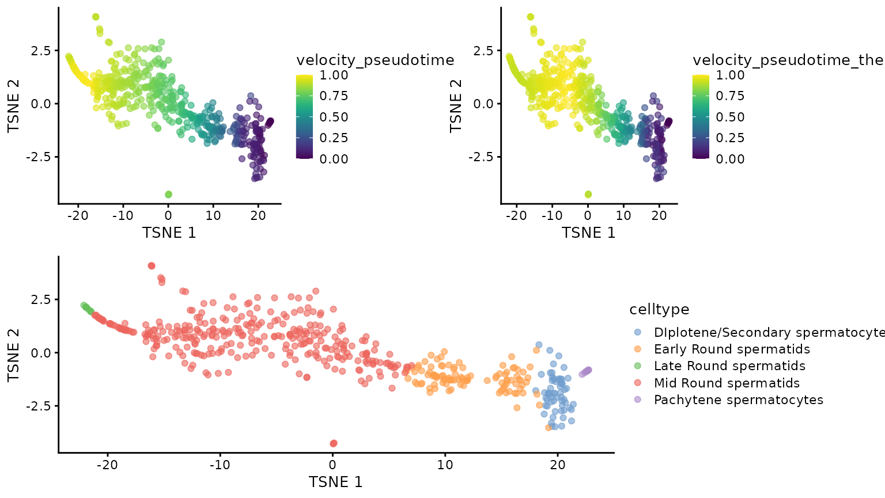
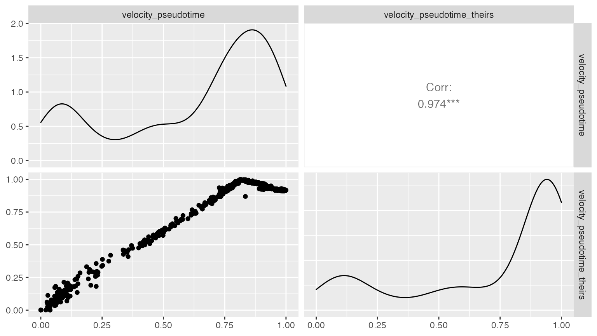
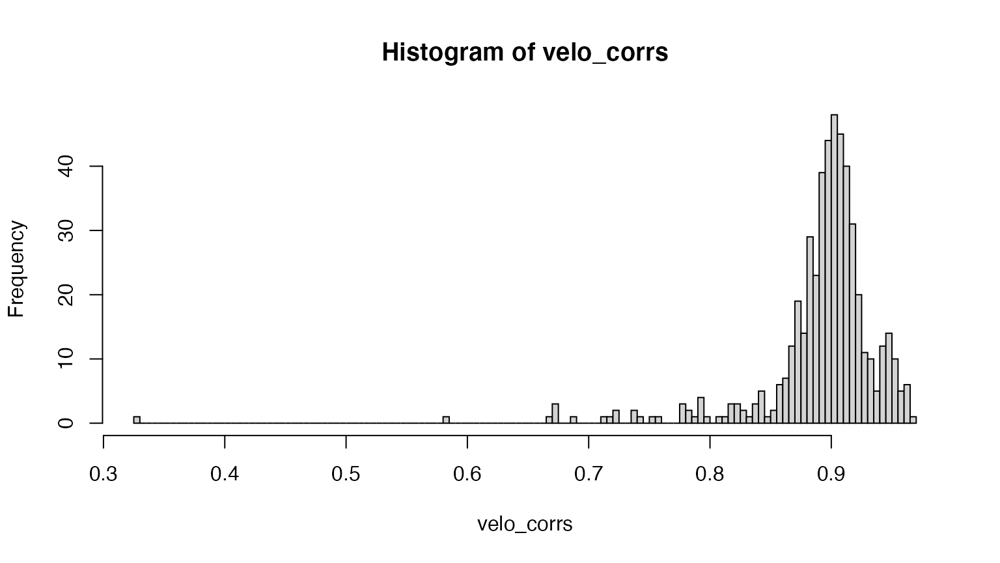
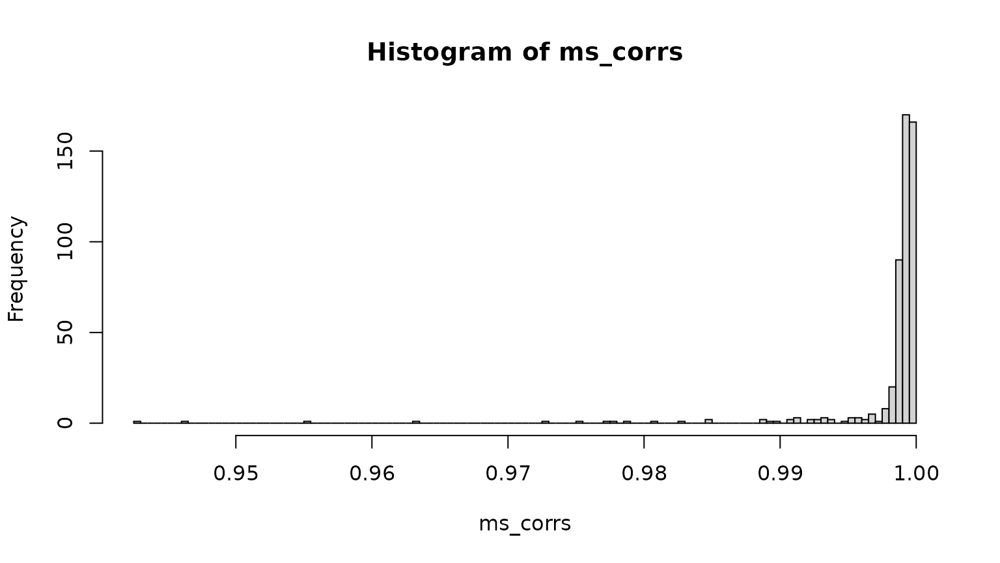
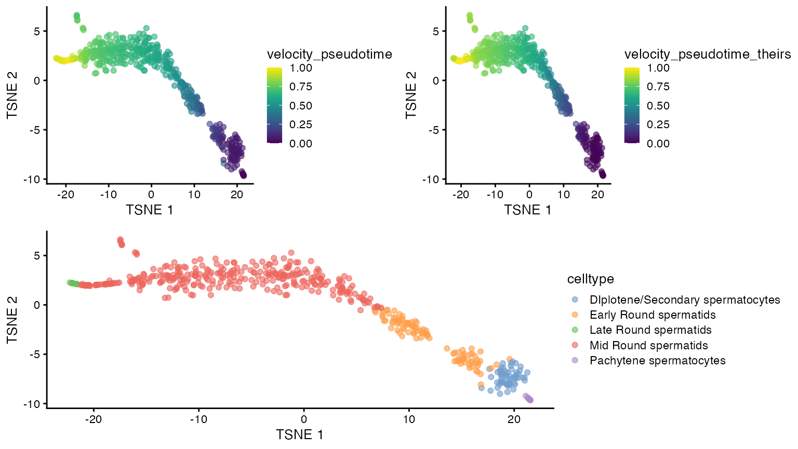
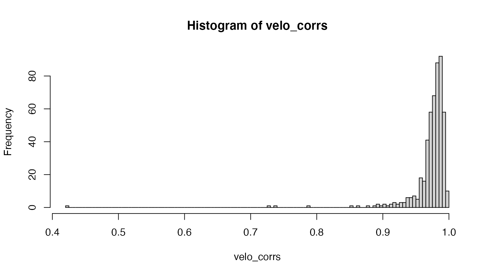
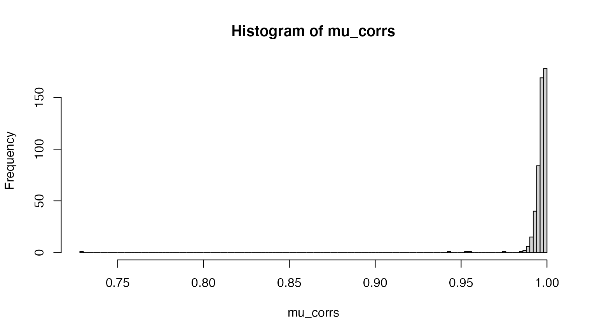

velociraptor sanity check
2021-02-22
Source:vignettes/extras/compare_velociraptor_runs.Rmd
compare_velociraptor_runs.RmdDefine virtual environment to use for reticulate
We use the velociraptor conda environment in order to run the scVelo commands also directly in python.
reticulate::use_virtualenv(basilisk:::.obtainEnvironmentPath(velociraptor:::velo.env))
sys <- reticulate::import("sys")
sys$version## [1] "3.7.7 (default, May 7 2020, 21:31:28) \n[GCC 7.3.0]"Set temporary directory
Output objects (to move data from SCE to AnnData without using basilisk) are saved to a temporary directory.
tmpdir <- tempdir()Prepare data
We use an example data set from scRNAseq, and subset to the first 500 cells. Next, we preprocess the data set by selecting highly variable genes and applying PCA and tSNE. The object is also saved to a h5ad file for use with scVelo directly in python.
## Load and subset data
sce <- scRNAseq::HermannSpermatogenesisData()[, 1:500]## using temporary cache /tmp/RtmpClkDvF/BiocFileCache## snapshotDate(): 2021-02-19## see ?scRNAseq and browseVignettes('scRNAseq') for documentation## downloading 1 resources## retrieving 1 resource## loading from cache## see ?scRNAseq and browseVignettes('scRNAseq') for documentation## downloading 1 resources## retrieving 1 resource## loading from cache## see ?scRNAseq and browseVignettes('scRNAseq') for documentation## downloading 1 resources## retrieving 1 resource## loading from cacheRun analysis directly in python
We use the same conda environment as in velociraptor to run the scVelo analysis directly in python, rather than via the R wrapper.
Steady-state model
import scanpy as sc
import sys
import numpy as np
import anndata
import scvelo as scv
import matplotlib
import pandas as pd
from pathlib import Path
from os import path
adata=anndata.read(r.tmpdir + "/anndata.h5ad")
scv.pp.filter_and_normalize(adata, enforce=True, n_top_genes=2000)## Normalized count data: X, spliced, unspliced.
## Exctracted 2000 highly variable genes.
## Logarithmized X.scv.pp.moments(adata)## computing neighbors
## finished (0:00:04) --> added
## 'distances' and 'connectivities', weighted adjacency matrices (adata.obsp)
## computing moments based on connectivities
## finished (0:00:00) --> added
## 'Ms' and 'Mu', moments of un/spliced abundances (adata.layers)scv.tl.velocity(adata, mode="steady_state")## computing velocities
## finished (0:00:00) --> added
## 'velocity', velocity vectors for each individual cell (adata.layers)scv.tl.velocity_graph(adata)## computing velocity graph
##
... 100%
finished (0:00:00) --> added
## 'velocity_graph', sparse matrix with cosine correlations (adata.uns)scv.tl.velocity_pseudotime(adata)## computing terminal states
## WARNING: Uncertain or fuzzy root cell identification. Please verify.
## identified 1 region of root cells and 1 region of end points .
## finished (0:00:00) --> added
## 'root_cells', root cells of Markov diffusion process (adata.obs)
## 'end_points', end points of Markov diffusion process (adata.obs)scv.tl.velocity_confidence(adata)## --> added 'velocity_length' (adata.obs)
## --> added 'velocity_confidence' (adata.obs)
## --> added 'velocity_confidence_transition' (adata.obs)adata.write(r.tmpdir + "/anndata_withvelo_steadystate.h5ad")Dynamical model
import scanpy as sc
import sys
import numpy as np
import anndata
import scvelo as scv
import matplotlib
import pandas as pd
adata=anndata.read(r.tmpdir + "/anndata.h5ad")
scv.pp.filter_and_normalize(adata, enforce=True, n_top_genes=2000)## Normalized count data: X, spliced, unspliced.
## Exctracted 2000 highly variable genes.
## Logarithmized X.scv.pp.moments(adata)## computing neighbors
## finished (0:00:00) --> added
## 'distances' and 'connectivities', weighted adjacency matrices (adata.obsp)
## computing moments based on connectivities
## finished (0:00:00) --> added
## 'Ms' and 'Mu', moments of un/spliced abundances (adata.layers)scv.tl.recover_dynamics(adata)## recovering dynamics
##
... 2%
... 4%
... 6%
... 8%
... 10%
... 12%
... 15%
... 17%
... 20%
... 22%
... 24%
... 26%
... 29%
... 31%
... 33%
... 36%
... 38%
... 40%
... 42%
... 44%
... 47%
... 49%
... 52%
... 54%
... 56%
... 58%
... 61%
... 62%
... 65%
... 67%
... 70%
... 72%
... 75%
... 77%
... 79%
... 81%
... 84%
... 86%
... 88%
... 91%
... 93%
... 96%
... 98%
... 100%
finished (0:02:15) --> added
## 'fit_pars', fitted parameters for splicing dynamics (adata.var)scv.tl.velocity(adata, mode="dynamical")## computing velocities
## finished (0:00:00) --> added
## 'velocity', velocity vectors for each individual cell (adata.layers)scv.tl.velocity_graph(adata)## computing velocity graph
##
... 100%
finished (0:00:00) --> added
## 'velocity_graph', sparse matrix with cosine correlations (adata.uns)scv.tl.velocity_pseudotime(adata)## computing terminal states
## identified 1 region of root cells and 1 region of end points .
## finished (0:00:00) --> added
## 'root_cells', root cells of Markov diffusion process (adata.obs)
## 'end_points', end points of Markov diffusion process (adata.obs)scv.tl.latent_time(adata)## computing latent time using root_cells as prior
## finished (0:00:00) --> added
## 'latent_time', shared time (adata.obs)scv.tl.velocity_confidence(adata)## --> added 'velocity_length' (adata.obs)
## --> added 'velocity_confidence' (adata.obs)
## --> added 'velocity_confidence_transition' (adata.obs)adata.write(r.tmpdir + "/anndata_withvelo_dynamical.h5ad")Process the data set
sce <- scuttle::logNormCounts(sce, assay.type=1)
## To use the HVGs determined by scVelo
# top.hvgs <- rownames(sceps)
## To get HVGs with scran
dec <- scran::modelGeneVar(sce)## Warning in regularize.values(x, y, ties, missing(ties), na.rm = na.rm):
## collapsing to unique 'x' values
top.hvgs <- scran::getTopHVGs(dec, n=2000)
set.seed(1)
sce <- scater::runPCA(sce, subset_row=top.hvgs)
sce <- scater::runTSNE(sce, dimred="PCA")Helper function
The function below runs scVelo via the R wrapper, first using the pre-normalized data and PCA from the SingleCellExperiment object, and then with use_theirs=TRUE. It also performs some comparisons between the two results.
run_scv <- function(sce, top.hvgs, mode) {
## precomputed PCs and normalized values
velo.out <- scvelo(
sce, assay.X="counts", sf.X=sizeFactors(sce),
subset.row=top.hvgs, use.dimred="PCA",
mode=mode
)
stopifnot(colnames(sce) == colnames(velo.out))
sce$velocity_pseudotime <- velo.out$velocity_pseudotime
## using scVelo normalization, gene selection and PCA calculation
velo.out_theirs <- scvelo(
sce, assay.X="counts", use.theirs=TRUE, mode=mode,
scvelo.params=list(filter_and_normalize=list(enforce=TRUE,
n_top_genes=2000L))
)
stopifnot(colnames(sce) == colnames(velo.out_theirs))
sce$velocity_pseudotime_theirs <- velo.out_theirs$velocity_pseudotime
## Inferred pseudotime
print(cowplot::plot_grid(
cowplot::plot_grid(
plotTSNE(sce, colour_by="velocity_pseudotime"),
plotTSNE(sce, colour_by="velocity_pseudotime_theirs"),
nrow = 1),
plotTSNE(sce, colour_by="celltype"), ncol = 1
))
print(GGally::ggpairs(as.data.frame(colData(sce))[, c("velocity_pseudotime",
"velocity_pseudotime_theirs")]))
shared_genes <- Reduce(intersect, list(rownames(velo.out), rownames(velo.out_theirs)))
message("Number of shared genes:")
print(length(shared_genes))
message("Ours:")
print(table(shared = rownames(velo.out) %in% shared_genes,
velogene = rowData(velo.out)$velocity_genes))
message("Theirs:")
print(table(shared = rownames(velo.out_theirs) %in% shared_genes,
velogene = rowData(velo.out_theirs)$velocity_genes))
message("Among shared genes, how many are velocity genes:")
print(table(ours = rowData(velo.out[shared_genes, ])$velocity_genes,
theirs = rowData(velo.out_theirs[shared_genes, ])$velocity_genes))
## Correlations of velocities
velo_corrs <- diag(cor(assay(velo.out[shared_genes, ], "velocity"),
assay(velo.out_theirs[shared_genes, colnames(velo.out)],
"velocity"),
use = "pairwise.complete"))
hist(velo_corrs, 100)
## Correlations of normalized spliced/unspliced values
ms_corrs <- diag(cor(assay(velo.out[shared_genes, ], "Ms"),
assay(velo.out_theirs[shared_genes, colnames(velo.out)],
"Ms"),
use = "pairwise.complete"))
hist(ms_corrs, 100)
mu_corrs <- diag(cor(assay(velo.out[shared_genes, ], "Mu"),
assay(velo.out_theirs[shared_genes, colnames(velo.out)],
"Mu"),
use = "pairwise.complete"))
hist(mu_corrs, 100)
velo.out_theirs
}Run scVelo
Dynamical model
sced <- run_scv(sce, top.hvgs=top.hvgs, mode="dynamical")
## Number of shared genes:## [1] 1036## Ours:## velogene
## shared FALSE TRUE
## FALSE 637 327
## TRUE 720 316## Theirs:## velogene
## shared FALSE TRUE
## FALSE 589 375
## TRUE 739 297## Among shared genes, how many are velocity genes:
## theirs
## ours FALSE TRUE
## FALSE 712 8
## TRUE 27 289
Compare our run with ‘use_theirs=TRUE’ to direct python calls
stopifnot(all(colnames(sced) == colnames(scepd)),
all(rownames(sced) == rownames(scepd)))
## Correlations of velocities
velo_corrs <- diag(cor(assay(sced, "velocity"),
assay(scepd, "velocity"),
use = "pairwise.complete"))
summary(velo_corrs)## Min. 1st Qu. Median Mean 3rd Qu. Max.
## 1 1 1 1 1 1
plot(sced$velocity_pseudotime, scepd$velocity_pseudotime)## Min. 1st Qu. Median Mean 3rd Qu. Max.
## 0.000e+00 1.788e-07 5.774e-07 6.633e-07 9.835e-07 2.444e-06Steady-state model
sces <- run_scv(sce, top.hvgs=top.hvgs, mode="steady_state")
## Number of shared genes:## [1] 1036## Ours:## velogene
## shared FALSE TRUE
## FALSE 788 176
## TRUE 741 295## Theirs:## velogene
## shared FALSE TRUE
## FALSE 619 345
## TRUE 750 286## Among shared genes, how many are velocity genes:
## theirs
## ours FALSE TRUE
## FALSE 738 3
## TRUE 12 283
Compare our run with ‘use_theirs=TRUE’ to direct python calls
stopifnot(all(colnames(sces) == colnames(sceps)),
all(rownames(sces) == rownames(sceps)))
## Correlations of velocities
velo_corrs <- diag(cor(assay(sces, "velocity"),
assay(sceps, "velocity"),
use = "pairwise.complete"))
summary(velo_corrs)## Min. 1st Qu. Median Mean 3rd Qu. Max.
## 1 1 1 1 1 1
plot(sces$velocity_pseudotime, sceps$velocity_pseudotime)## Min. 1st Qu. Median Mean 3rd Qu. Max.
## 0.000e+00 7.153e-07 2.012e-06 2.216e-06 3.695e-06 4.947e-06Session info
## R Under development (unstable) (2021-02-18 r80027)
## Platform: x86_64-pc-linux-gnu (64-bit)
## Running under: Ubuntu 20.04.1 LTS
##
## Matrix products: default
## BLAS/LAPACK: /usr/lib/x86_64-linux-gnu/openblas-pthread/libopenblasp-r0.3.8.so
##
## locale:
## [1] LC_CTYPE=en_US.UTF-8 LC_NUMERIC=C
## [3] LC_TIME=en_US.UTF-8 LC_COLLATE=en_US.UTF-8
## [5] LC_MONETARY=en_US.UTF-8 LC_MESSAGES=C
## [7] LC_PAPER=en_US.UTF-8 LC_NAME=C
## [9] LC_ADDRESS=C LC_TELEPHONE=C
## [11] LC_MEASUREMENT=en_US.UTF-8 LC_IDENTIFICATION=C
##
## attached base packages:
## [1] parallel stats graphics utils stats4 methods base
##
## other attached packages:
## [1] basilisk_1.3.6 reticulate_1.18
## [3] GGally_2.1.0 cowplot_1.1.1
## [5] scater_1.19.10 ggplot2_3.3.3
## [7] velociraptor_1.1.5 scran_1.19.14
## [9] scuttle_1.1.16 scRNAseq_2.5.7
## [11] SingleCellExperiment_1.13.12 SummarizedExperiment_1.21.1
## [13] Biobase_2.51.0 GenomicRanges_1.43.3
## [15] GenomeInfoDb_1.27.6 IRanges_2.25.6
## [17] S4Vectors_0.29.7 BiocGenerics_0.37.1
## [19] MatrixGenerics_1.3.1 matrixStats_0.58.0
##
## loaded via a namespace (and not attached):
## [1] AnnotationHub_2.23.2 BiocFileCache_1.15.1
## [3] systemfonts_1.0.1 plyr_1.8.6
## [5] igraph_1.2.6 lazyeval_0.2.2
## [7] BiocParallel_1.25.4 digest_0.6.27
## [9] ensembldb_2.15.2 htmltools_0.5.1.1
## [11] viridis_0.5.1 magrittr_2.0.1
## [13] memoise_2.0.0 ScaledMatrix_0.99.2
## [15] limma_3.47.8 Biostrings_2.59.2
## [17] askpass_1.1 pkgdown_1.6.1
## [19] prettyunits_1.1.1 colorspace_2.0-0
## [21] blob_1.2.1 rappdirs_0.3.3
## [23] textshaping_0.3.0 xfun_0.21
## [25] dplyr_1.0.4 crayon_1.4.1
## [27] RCurl_1.98-1.2 jsonlite_1.7.2
## [29] glue_1.4.2 gtable_0.3.0
## [31] zlibbioc_1.37.0 XVector_0.31.1
## [33] DelayedArray_0.17.8 BiocSingular_1.7.2
## [35] scales_1.1.1 DBI_1.1.1
## [37] edgeR_3.33.2 Rcpp_1.0.6
## [39] viridisLite_0.3.0 xtable_1.8-4
## [41] progress_1.2.2 dqrng_0.2.1
## [43] bit_4.0.4 rsvd_1.0.3
## [45] metapod_0.99.5 httr_1.4.2
## [47] RColorBrewer_1.1-2 ellipsis_0.3.1
## [49] farver_2.0.3 reshape_0.8.8
## [51] pkgconfig_2.0.3 XML_3.99-0.5
## [53] sass_0.3.1 dbplyr_2.1.0
## [55] locfit_1.5-9.4 labeling_0.4.2
## [57] tidyselect_1.1.0 rlang_0.4.10
## [59] later_1.1.0.1 AnnotationDbi_1.53.1
## [61] munsell_0.5.0 BiocVersion_3.13.1
## [63] tools_4.1.0 cachem_1.0.4
## [65] generics_0.1.0 RSQLite_2.2.3
## [67] ExperimentHub_1.17.1 evaluate_0.14
## [69] stringr_1.4.0 fastmap_1.1.0
## [71] yaml_2.2.1 ragg_1.1.0
## [73] grDevices_4.1.0 knitr_1.31
## [75] bit64_4.0.5 fs_1.5.0
## [77] purrr_0.3.4 KEGGREST_1.31.1
## [79] AnnotationFilter_1.15.0 sparseMatrixStats_1.3.6
## [81] mime_0.10 xml2_1.3.2
## [83] biomaRt_2.47.4 compiler_4.1.0
## [85] beeswarm_0.2.3 filelock_1.0.2
## [87] curl_4.3 png_0.1-7
## [89] interactiveDisplayBase_1.29.0 tibble_3.0.6
## [91] statmod_1.4.35 bslib_0.2.4
## [93] stringi_1.5.3 highr_0.8
## [95] basilisk.utils_1.3.7 GenomicFeatures_1.43.3
## [97] desc_1.2.0 lattice_0.20-41
## [99] bluster_1.1.5 ProtGenerics_1.23.7
## [101] Matrix_1.3-2 vctrs_0.3.6
## [103] pillar_1.4.7 lifecycle_1.0.0
## [105] BiocManager_1.30.10 jquerylib_0.1.3
## [107] BiocNeighbors_1.9.4 bitops_1.0-6
## [109] irlba_2.3.3 httpuv_1.5.5
## [111] rtracklayer_1.51.4 R6_2.5.0
## [113] BiocIO_1.1.2 promises_1.2.0.1
## [115] gridExtra_2.3 vipor_0.4.5
## [117] zellkonverter_1.1.4 assertthat_0.2.1
## [119] openssl_1.4.3 rprojroot_2.0.2
## [121] rjson_0.2.20 withr_2.4.1
## [123] GenomicAlignments_1.27.2 Rsamtools_2.7.1
## [125] datasets_4.1.0 GenomeInfoDbData_1.2.4
## [127] hms_1.0.0 grid_4.1.0
## [129] beachmat_2.7.6 rmarkdown_2.7
## [131] DelayedMatrixStats_1.13.5 Rtsne_0.15
## [133] shiny_1.6.0 ggbeeswarm_0.6.0
## [135] restfulr_0.0.13